Two OSs, One Home Partition
Abstract
This project investigates the feasibility of sharing a single home partition between two bare-metal UNIX-like operating systems. The objective is to eliminate the redundancy and configuration complexity associated with virtual machines while maintaining consistent user environments across both systems.
The method involved manually partitioning a GPT disk into four segments: an EFI system partition, a root partition for each OS, and a shared home partition using ZFS. Special attention was given to maintaining consistent UIDs across both systems to preserve file ownership integrity. Custom bootup and shutdown procedures were implemented in each OS to ensure the ZFS pool was properly imported and exported.
Results demonstrate that both operating systems can reliably access and modify a shared home directory, with changes reflected immediately across environments.
Introduction
Sometimes one may find themself in need of both Linux and FreeBSD, especially when administrating a large and diverse network of both servers and clients. Many administrators find VMs adequate for this purpose, but networking, USB passthrough, and many other essential functions of a VM are difficult to set up correctly, and often break when the OS or VM host update. There is a desireable simplicity to running your OSs baremetal. But even running your OSs baremetal, doing away with having to do that extra networking and USB configuration for two different VMs, one may wish they could configure their FreeBSD & Linux not only simultaneously, but that any changes made to their configuration on one would be seamlessly and instantly applied to the other.
This project aims to share a partition mounted to /home/
between a dual-boot installation of FreeBSD & Linux.
Method
Equipment
- 64-bit IBM-compatible PC with UEFI firmware and an internet connection
-
FreeBSD install media, can be obtained at download.freebsd.org/releases/arm64/aarch64/ISO-IMAGES/
(experiment performed with 14.0-release) -
Artix Linux base OpenRC install media, can be obtained at iso.artixlinux.org/isos.php
(experiment performed with artix-base-openrc-20230814) -
Empty internal storage media of at least 60GiB
(experiment performed with 100GiB SATA HDD)
Artix OpenRC was chosen largely because it is the Linux distribution I am most comfortable with. I am confident that this could easily be adapted to Gentoo with OpenRC, or even to a more traditional Systemd-based distribution such as Arch if you are comfortable with writing Systemd service scripts. However, it is important that a distro which can be installed without a graphical installer is used, as most graphical installers either do not provide the low-level control necessary to make this work or make changes to the shared partitions which will cause conflicts with FreeBSD.
Partition layout
| slice№ | size | type | filesystem | purpose |
|---|---|---|---|---|
| 1 | 512MiB | efi | msdosfs | EFI boot partition |
| 2 | 20GiB | freebsd-ufs | ufs | FreeBSD root |
| 3 | 20GiB | linux-data | ext4 | Linux root |
| 4 | remaining | zfs | zfs | Home partition |
I decided to use ZFS as the shared filesystem as it's the only filesystem both Linux and FreeBSD both support reading from and writing to, which also supports UNIX file attributes.
Remember that applications and such will still be installed to the root, not the home partition. So if you're expecting to install a lot of big software or something, one may wish to embiggen those 20GiB root partitions as space allows.
There are no SWAP partitions. Through preliminary research, I determined FreeBSD and Linux SWAP partitions are not compatible, so one would need separate a SWAP partition for each OS. Most computers nowadays have enough RAM that you can live without SWAP, but if you really need SWAP, I would suggest using SWAPfiles instead.
Procedure
I decided to install FreeBSD first, because it has the
user-friendly TUI Partition Editor, sade.
This could be done the other way around if you're
comfortable with fdisk or gpart or whatever else your
Linux distro's installer comes with, but this makes it
much easier to make sure your partitions (which will
become difficult to keep track of) are all sane.
I followed the normal installation process up until I reached the Partitioning step. Instead of any of the guided options, I selected Manual Disk Setup.
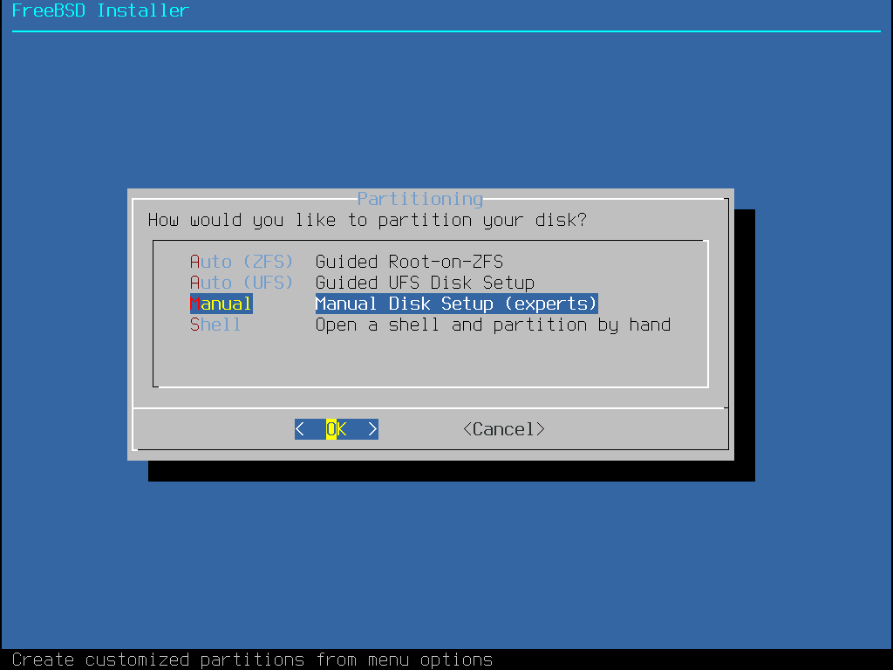
I
Created a GPT partition
scheme. Then I
Created a new partition of
the Type efi, Size 512MB
(remember, what FreeBSD refers to as "MB" are
actually MiB), and Mountpoint /boot/efi.
I chose this size because I needed to fit FreeBSD's
bootloader, Linux's bootloader, and rEFInd in there. I
acknowledge that it may be much more than necessary, but
since drives are measured in terabytes nowadays, I was
not worried about having a few MiB of unused space.
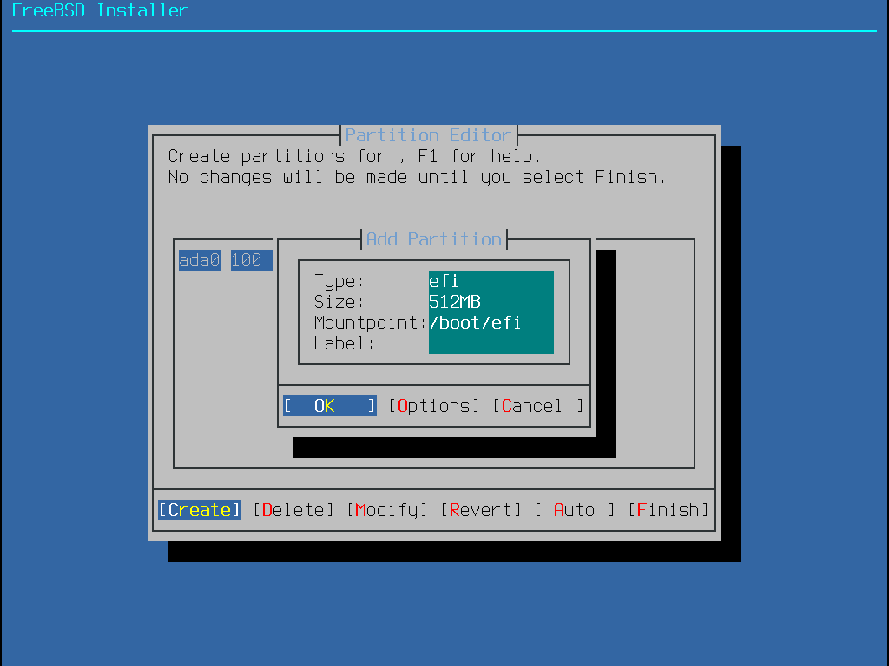
Then I
Created the partition for
the FreeBSD system of the Type freebsd-ufs,
Size 20GB, and Mountpoint /.
Then I
Created the partition for
the Linux system of the Type linux-data,
Size 20GB, and no Mountpoint.
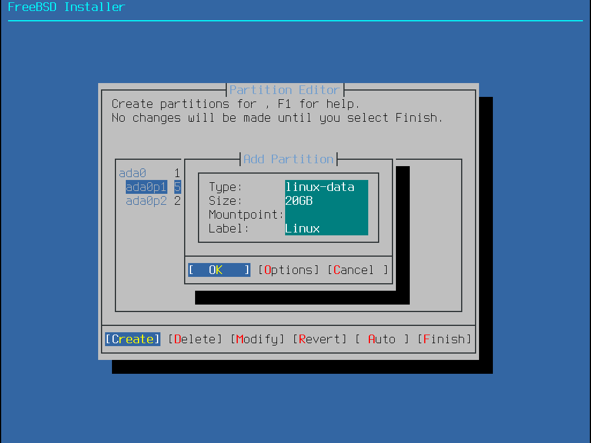
I did not bother to give the Linux partition a mountpoint. This will be an ext4 filesystem, and FreeBSD can't read ext4 natively (despite prevalent claims to the contrary), so trying to mount it would be futile.
Then I finally
Created the home partition,
with the Type freebsd-zfs and Mountpoint
/home. FreeBSD automatically populated the Size
field with the value required to fill the remainder of the
drive, so I left it at its default value of 59GB.
I am unsure why FreeBSD calls it freebsd-zfs,
but it is no cause for concern—Linux mounts it just
fine with OpenZFS.
The FreeBSD Handbook asserts that
/home/ is simply a softlink to
/usr/home/, and that we should mount our home
partition there. However, during preliminary experimentation
I determined this assertion untrue, and new users' home
directories are created directly at /home/.
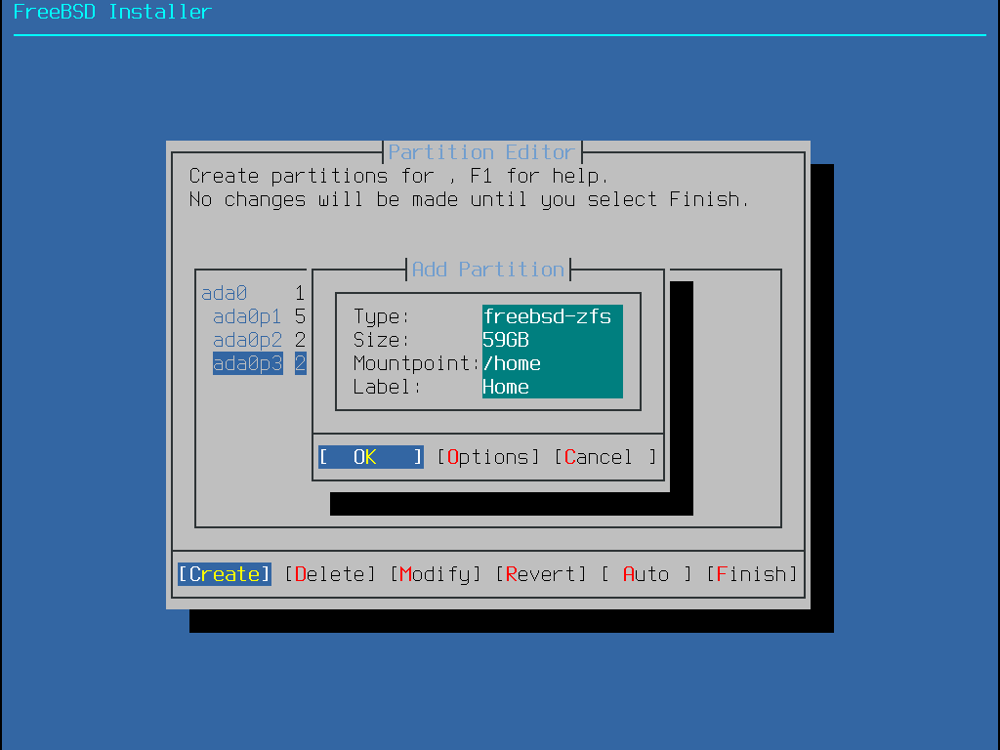
See the following figure for reference of the final partition table:
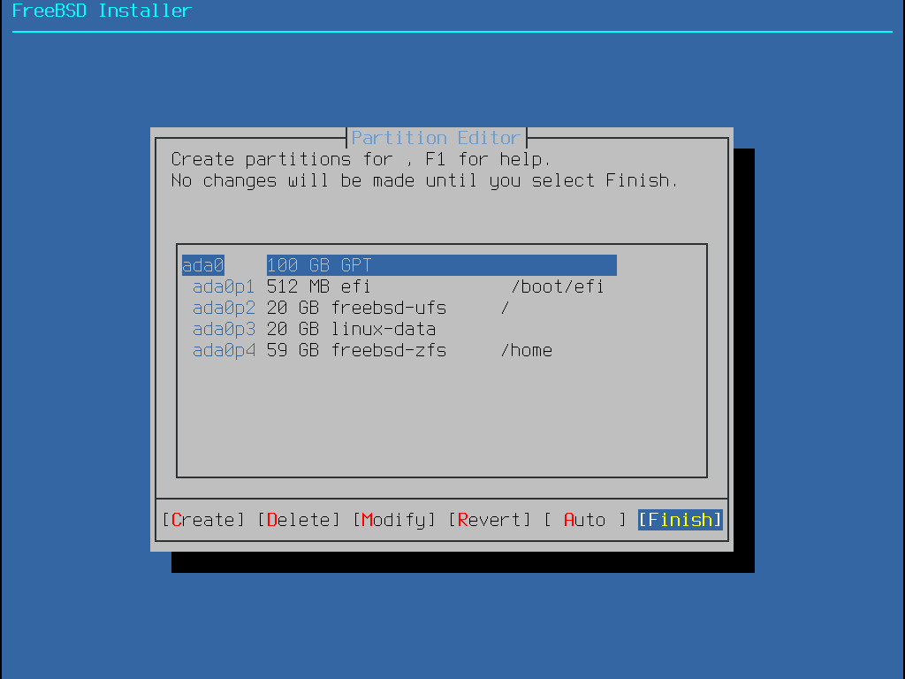
After double-, triple-, and quadruple-checking that I got everything right, I Finished the partitioning.
FreeBSD installed all the base files, asked for a root password, asked to set up networking interfaces, and so on. I completed those steps as normal until it asked if want to Add User Accounts, to which I answered Yes.
FreeBSD starts counting UIDs from 1001, while Linux starts
counting UIDs from 1000. This is important because file
attributes on the home partition will be stored by UID. In
other words, for the same user to be able to own the same
home folder on both OSs, they both must have the same UID.
I chose to manually specify the UID 1000 here
in FreeBSD, if only so I don't have to remember when I'm
installing Linux later.
![FreeBSD Installer:
Add Users:
Username: Naln1
Full name: Lucy Osmond
Uid (Leave empty for default): 1000
Login group [naln1]:
Login group is naln1. Invite naln1 into other groups? []: operator, wheel
Group operator, does not exist!
Login group is naln1. Invite naln1 into other groups? []: operator wheel
Login class [default]:
Shell (sh csh tcsh nologin) [sh]: csh
Home directory [/home/naln1]:
Home directory permissions (Leave empty for default):
Use password-based authentication? [yes]:
Use an empty password? (yes/no) [no]:
Use a random password? (yes/no) [no]:
Enter password:
Enter password again:
Lock out the account after creation? [no]:
Username: naln1
Password: *****
Full Name: Lucy Osmond
Uid: 1000
Class:
Groups: naln1 operator wheel
Home: /home/naln1
Home Mode:
Shell: /bin/csh
Locked: no
OK? (yes/no) [yes]:](BSD-AddUser.png)
While I was here, I decided to create the other users for the system. FreeBSD is smart enough to set the default UIDs sequentially.
I proceeded to exit the installer, and replied Yes to Manual Configuration.
If you are following this method, this would be a good
opportunity to install your preferred shell and text editor,
because I spent a lot of time in this shell before rebooting.
I installed fish (Finally, a command line shell
for the 90s!) for my shell, and decided to use ee
as my text editor. If you choose to use a different shell or
editor you can substitute references to mine with your own
without affecting the results of the project.
I then opened /etc/rc.conf in ee
and added the line zfs_enable="YES". This makes
the ZFS service script run on startup, to import ZFS pools.
Without this, the FreeBSD system would not be able to access
the ZFS partition.
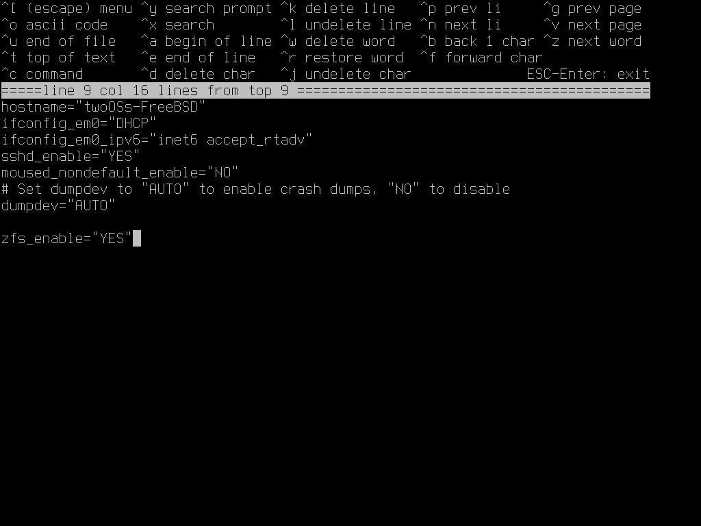
I also created and opened /boot/loader.conf in
ee and added the line zfs_load="YES"
. This loads the kernel module for ZFS during boot,
which allows FreeBSD to be able to recognize ZFS partitions
as being valid filesystems at all.
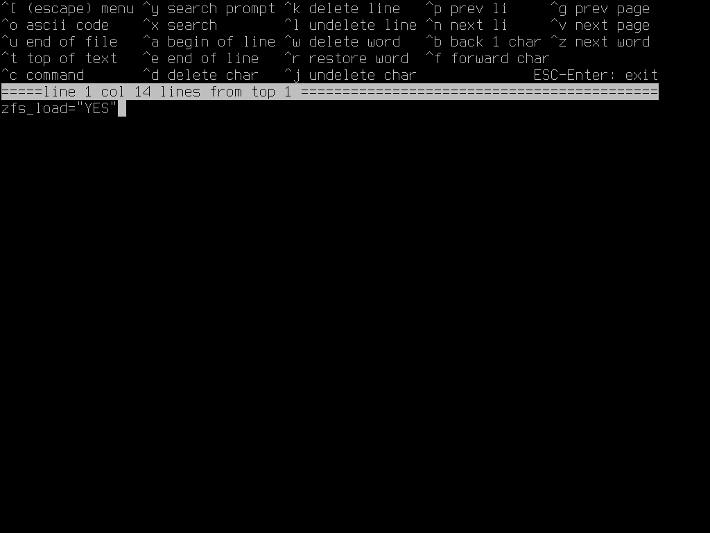
These are the same steps FreeBSD would perform automatically if we followed Guided setup with root on ZFS, but because the system doesn't know exactly what we did with the petitioning table, we have to do this manually. If not for both of these steps, the kernel would freak out during boot and throw me into single-user mode, and nobody wants to boot into single-user mode if it can be avoided!
Normally FreeBSD imports ZFS pools using a cache file, and that would be ✨wonderful✨ if I were a normal person doing normal things. Unfortunately, I am not a normal person doing normal things. In order to safely mount the same ZFS pool to Linux, I need to export it on shutdown. But if a ZFS pool is not imported when FreeBSD shuts down, it gets removed from the cache file. So I had to manually inform FreeBSD to both import the home partition on boot, and export the home partition on shutdown.
I perceived the contents of /etc/fstab using
cat, to take careful note of the Device name
that associates with the /home mount. For me it
was simply called home, but that is likely to
differ due to reasons beyond our control.
During preliminary experimentation, I determined the best
way to export the zpool before shutdown on stock FreeBSD is
by modifying /etc/rc.shutdown. This is because
the zpool rc script does not actively run as a
daemon. Near the bottom of the file, I found a comment which
reads # Insert other shutdown procedures here,
and—with a grimace—placed zpool export
home on its own line beneath that comment.
I propose a potential experiment to implement a
rc.shutdown.d/ folder. However, that is unnecessary
for, and beyond the scope of this project. There is also
the secondary completed experiment of replacing FreeBSD's
init system with OpenRC like Artix, which will be appended
to this project.
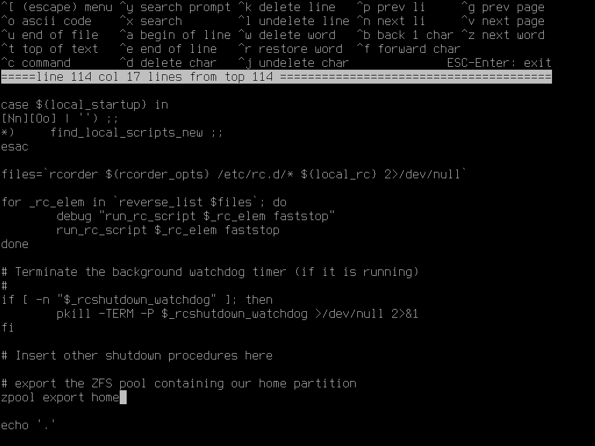
I proceeded to edit /etc/rc.d/zpool. Inside the
function zpool_start(), on a new line just
above the line local cachefile, I added the
line zpool import home.
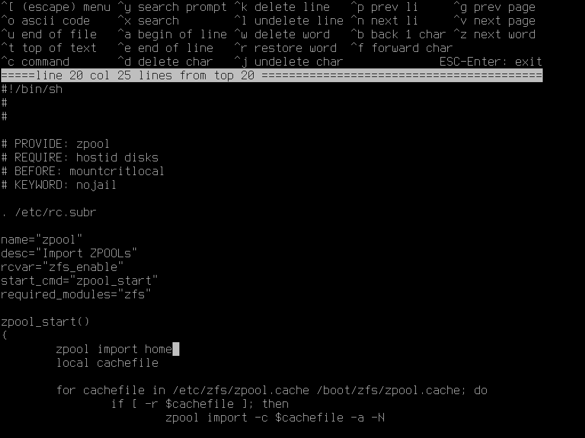
I decided to check my work by rebooting the system to make
sure FreeBSD actually boots without any hiccups. I
exited the shell(s), and then selected the
conveniently-presented
Reboot option. In doing this,
I neglected the very important step of exporting the zpool
before exiting the shell. To get back on track, once I
was placed into single-user mode, I simply force mounted it with
zpool import -f home, exported it with
zpool export home, and then rebooted.
I logged in to my user, and ensured that my home directly is
sufficiently populated with default dotfiles by using
ls -la. I then proceeded to reboot the system with
shutdown -r now. It is important not to use the
similar reboot, as reboot doesn't
run rc.shutdown, therefore not exporting the
home partition ZFS pool, which would cause Artix to refuse
to mount the partition.
This time the computer booted up, I set the EFI to boot the
Artix live media instead of FreeBSD. I logged in to the live
user, and immediately ran su.
I made use of fdisk -l to determine what device
name I need for the Linux partition, by searching for the
device name whose Type is Linux filesystem,
which turned out to be sda3. I
then made the ext4 filesystem in that partition by running
mkfs.ext4 /dev/sda3.
I proceeded to install OpenZFS. The Artix wiki suggests setting the live media up for SSH,
but that adds more steps than necessary in an already
complex project, so I decided to skip that. I acquired
ArchZFS's PGP key using curl -O https://archzfs.com/archzfs.gpg,
imported the key into pacman with pacman-key -a archzfs.gpg,
and locally-signed the key with pacman-key --lsign-key DDF7DB817396A49B2A2723F7403BD972F75D9D76.
I then proceeded to add the ArchZFS repository to /etc/pacman.conf by appending the following snippet:
[archzfs]
Server = https://zxcvfdsa.com/archzfs/$repo/$arch
I chose the zxcvfdsa mirror over the upstream repository as
it was geographically closer to me than the upstream, and
because the upstream was hosted on Hetzner, whose published
opinion is that drawings of family-friendly lesbian relationships
constitutes pornography, while Linode—who hosts
zxcvfdsa—did not have a published opinion concerning
lesbian relationships at the time.
Revision 22/03/26: ArchZFS no longer hosts
their own repository nor touts any mirrors. Instead the
server URL should now be https://github.com/archzfs/archzfs/releases/download/experimental.
Finally I installed ArchZFS with pacman -Sy archzfs-dkms,
and enabled the ZFS kernel module with modprobe zfs.
Then I proceeded to mount all of the partitions. I mounted the
Linux root partition to /mnt with mount
/dev/sda3 /mnt. I created /mnt/boot for
the EFI boot partition using mkdir /mnt/boot and
mounted it with mount /dev/sda1 /mnt/boot. I
created /mnt/home for the home partition with
mkdir /mnt/home, imported the zpool with
zpool import home, set the ZFS mount point to legacy
with zfs set mountpoint=legacy home so it
behaves the same way as in FreeBSD, and finally mounted the
home partition with mount -t zfs home /mnt/home.
Then I finally installed Artix to the disk. Artix uses
basestrap, which is practically the same as
Arch's pacstrap. The excellent thing about both
of these tools is that it's basically a full pacman
for alternative roots. I installed the Artix base system and
all necessary extensions to the disk with one command,
basestrap /mnt base openrc elogind-openrc linux
linux-firmware linux-headers dkms archzfs-dkms,
deciding to hold off on installing convenience packages until
chrooting into the new system. Then I generated
the FileSystem TABle with fstabgen -U /mnt >>
/mnt/etc/fstab, and copied pacman.conf from
the live media to the new Artix installation so the ArchZFS
repo is available to the new system with cp
/etc/pacman.conf /mnt/etc/pacman.conf.
I proceeded to chroot into my new Artix installation with
artix-chroot /mnt, install convenience packages
fish and nano, set up Time Zone
& Locale, networking, and a root password. I created a
user with useradd -m naln1, where it warned me
that user's home directory already exists. This was fine
because FreeBSD already created that home directly, and
the whole point of this project is for both systems to have
the same home directory! Then I set that user's password
using passwd naln1.
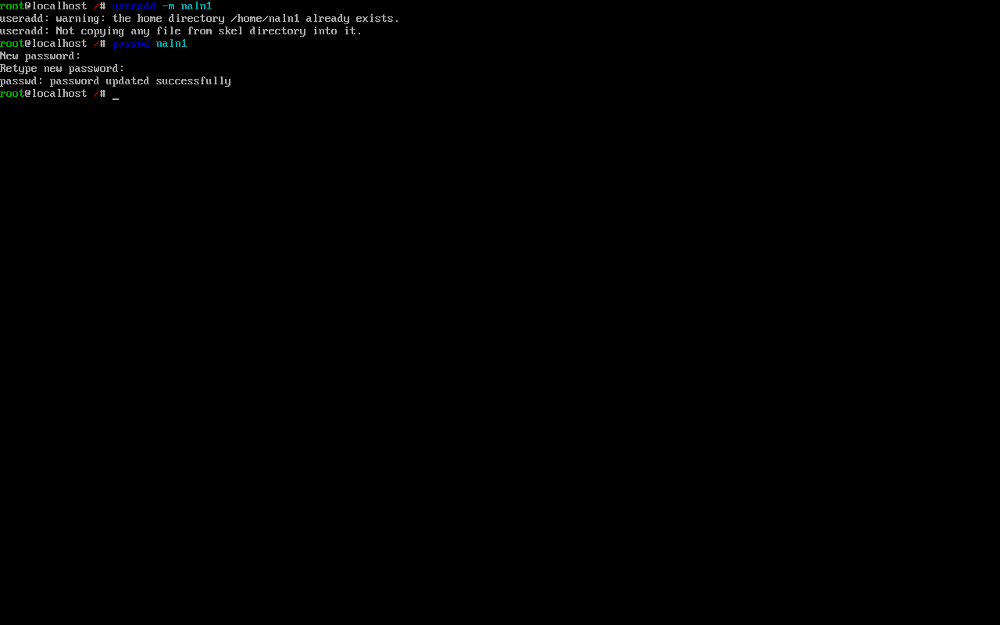
Then I created OpenRC service scripts to import and export
the zpool on startup and shutdown, because—unlike
FreeBSD—Artix doesn't automatically mount
previously-mounted ZFS partitions in any way. I created two
files in /etc/init.d/. I filled /etc/init.d/zfs-import-home
with
#!/usr/bin/openrc-run
depend() {
before localmount
}
start() {
ebegin "Importing Zpool 'home'"
/usr/bin/zpool import home
eend $?
}and I filled
/etc/init.d/zfs-export-home with
#!/usr/bin/openrc-run
start() {
ebegin "Exporting Zpool 'home'"
/usr/bin/zpool export home
eend $?
}Then I made the scripts executable with
chmod +x /etc/init.d/zfs-import-home &
chmod +x /etc/init.d/zfs-export-home, and
enabled the services with rc-update add zfs-import-home
& rc-update add zfs-export-home shutdown. I
made sure to set zfs-export-home's runlevel to
shutdown so that it runs on shutdown instead of
during bootup, which would undo the zfs-import-home
service's hard work!
Then I used Artix as a vehicle to install the rEFInd boot
manager. A bootloader is necessary to load the two OSs.
Although FreeBSD can bootload itself, Linux unfortunately
cannot and needs something else—most commonly GRUB
—to get it to boot. However, I do not generally have
good results using GRUB, and therefore prefer to use rEFInd,
which also comes with the benefit of being a little prettier.
First I installed the rEFInd package with pacman -S refind.
In contrast to what you may expect, the rEFInd package
doesn't actually install rEFInd—it just installs the
ability to install rEFInd, so I actually installed rEFInd
with the aptly-named command refind-install.
Part of its output contained the line Creating //boot/refind_linux.conf; edit it to adjust kernel options.,
and I did proceed to edit //boot/refind_linux.conf
as rEFInd incorrectly tries to boot from the label of the
live media I was currently using instead of the drive Artix
was installed on (silly rEFInd 😅). The last line in refind_linux.conf
("Boot with minimal options") does however
contain the correct UUID, so I copied the
root=UUID=f61c7459-4796-4086-824a-adc346679023
to the beginnings of the first two lines, and removed the
label=ARTIX_202308s from those same lines.
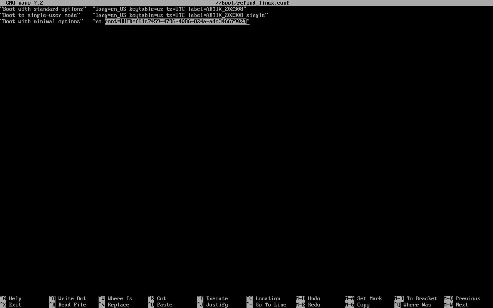
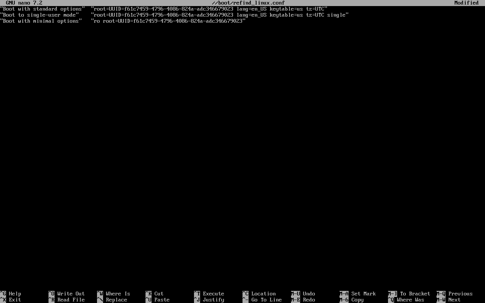
After that lengthy and tiring process, I was excited to be done!
However, I had to reboot into Artix and confirm everything
works as expected before I could declare success. I remembered
to run zpool export home before using
shutdown -r now to reboot the system. Thankfully I
was met with a—admittedly kitsch—rEFInd boot
screen!
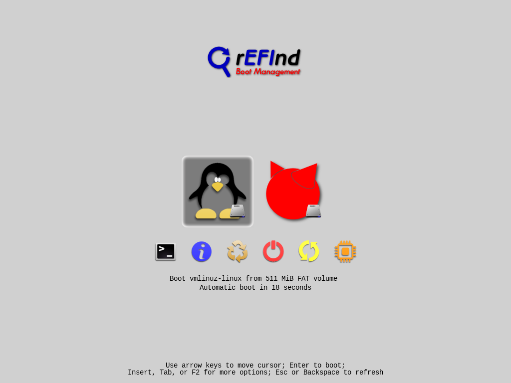
I then booted into Artix, and once again made sure the same
dotfiles from FreeBSD were there with ls -la,
as well as confirming the user and group owners match my
username (and not another user's, or an unassigned UID!).
I then proceeded to reboot back and forth between FreeBSD
and Artix to confirm the ZFS home partition is being
dismounted and remounted correctly for each boot.
Conclusion
I was able to effectively boot two UNIX-like operating systems, Artix Linux and FreeBSD, with one home partition shared between them. It is a long and complicated process, and requires using some bespoke methodology, but it seems acceptably stable. However, this experiment is inconclusive about long-term issues that may surface as a result of continuing use of the system with the shared home partition.